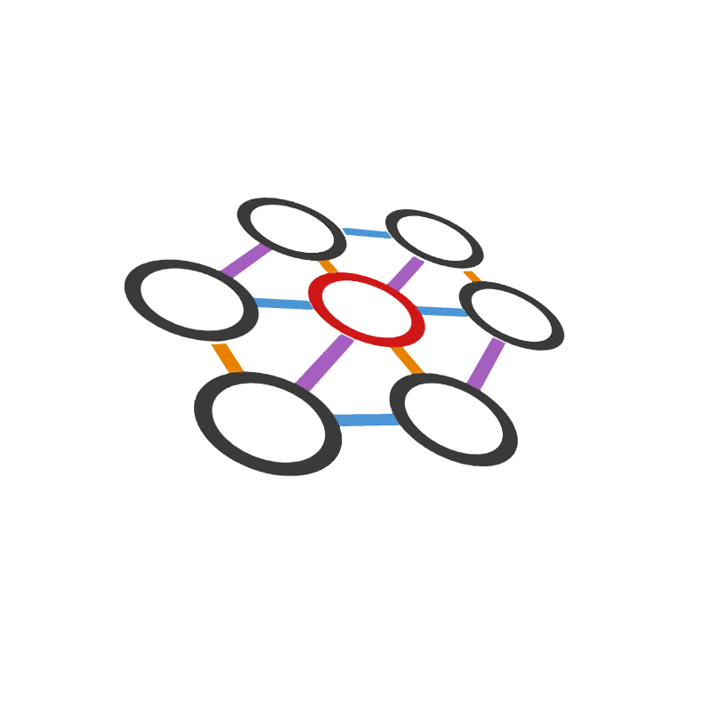
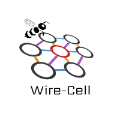

Wire-Cell Logos
Wire-Cell and Bee have logos!
For a while, the "branding" for Wire-Cell on this blog and on GitHub has been in the form of an image of ionization activity reconstructed using Wire-Cell imaging and displayed in the Bee event visualization system:

Xin Qian recently came up with an initial concept for a new and proper logo and Chao Zhang tuned it up including a variant for his Bee event visualization system. The main Wire-Cell logo is now:

As can be noticed by frequent visitors to this blog, it has already replaced the old screen shot branding. A version with a transparent background is also produced:

The logo specialized for Bee is:

We lack vector PDF and SVG versions of these which are needed for producing quality presentations and papers. If anyone has the skills to produce these forms, please do so and contribute them!